To orient myself, I first looked at a map of the location of all residential permits in the dataset. The density seems relatively uniform throughout, with perhaps more clustering in the Ballard, Fremont, South Lake Union, and Capitol Hill neighborhoods.
Assignment 2: Exploratory Data Analysis
Emily Killingbeck — emilyek at uw dot edu
Dataset: Seattle building permits (1998 - 2019)
This dataset contains all building permits issued or in progress in the city of Seattle, starting with the year 1998. The data is provided by the Seattle Department of Construction and Inspections (SDCI), and as someone who would love to build a house one day, I thought this would be an interesting dataset to explore.
The data is available online at: https://data.seattle.gov/Permitting/Building-Permits/76t5-zqzr
Initial Analysis Questions
- Are there areas of Seattle where construction permits cluster?
- What has the status of construction been since 2014, the year I moved to Seattle?
- What is happening with construction in my neighborhood of Ballard, specifically?
- As someone who hopes to build a house one day, how long can I expect the Seattle permit process to take?
- What is the average cost of a construction project? Has this changed over time?
Discoveries & Insights
I restricted the permit data to residential rather than non-residential, as my questions center around residential permits. It should be noted that a fairly significant number of fields in this dataset are "Null" and have been excluded from this analysis, perhaps indicative of less than stellar record keeping on Seattle's part?
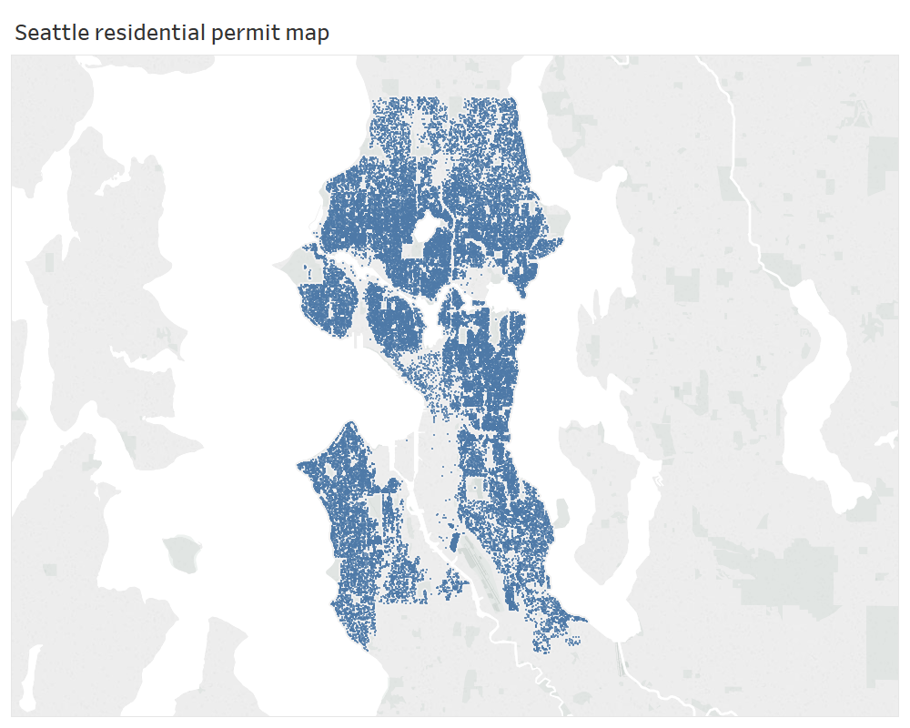
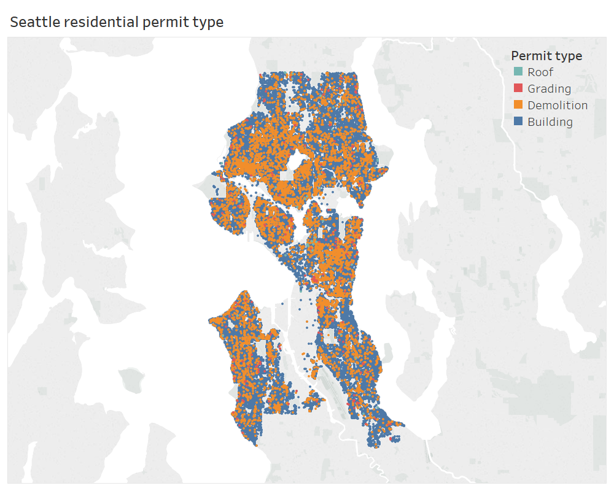
I next stratified the data by permit type, which is classified by roof, grading, demolition, or building. The majority of permits seem to be for demolition or building, with some grading throughout the city and comparatively few roof permits. Demolition seems especially frequent in my neighborhood of Ballard, something of which I was already aware!
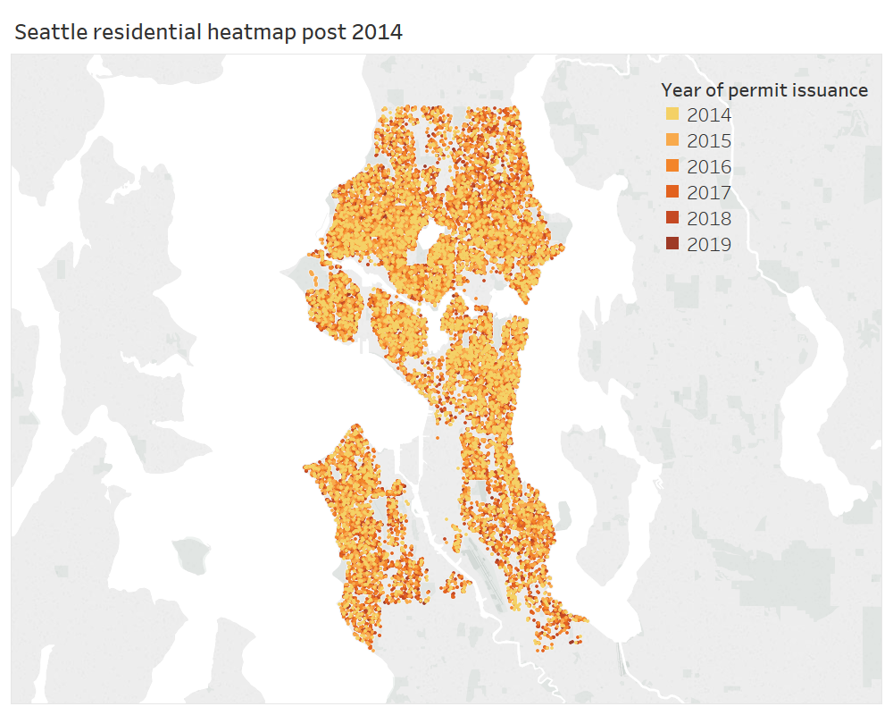
I was curious whether stratifying the data by year of permit issuance would reveal any structure in the data. I chose 2014 because it was the year I moved to Seattle, and here the data is restricted to just building permits to the exclusion of roof, grading, or demolition. No obvious pattern is discernible -- it seems residential construction has been relatively uniform over these years.
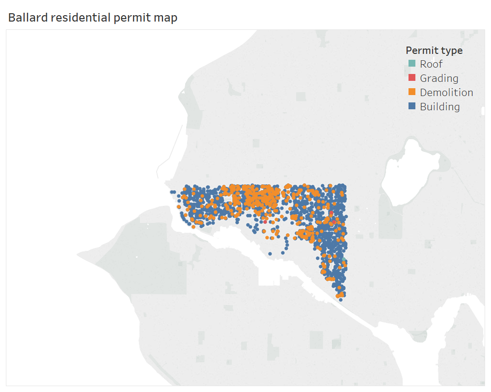
I love living in Ballard, so I was curious how the data looks in my neighborhood specifically. Here the map has been restricted to my zip code, 98107, and the frequency of demolition in Ballard is again apparent -- developers commonly buy up older single family homes in the neighborhood, replacing them with four tall townhouses on the same lot.
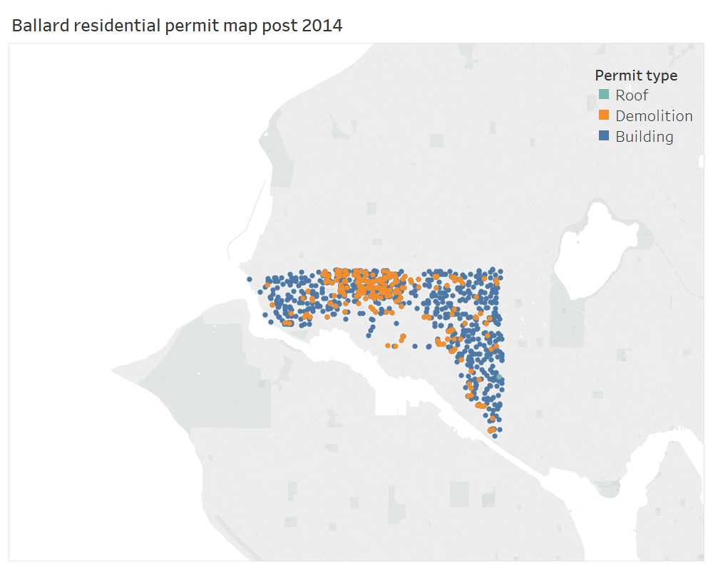
Limiting the data to 2014 and onward shows a similar trend for Ballard, possibly indicating that the majority of demolition in my neighborhood has been accomplished in these years. No grading has been done in 98107 since 2014, as this category disappears from the data and, consequently, the legend.
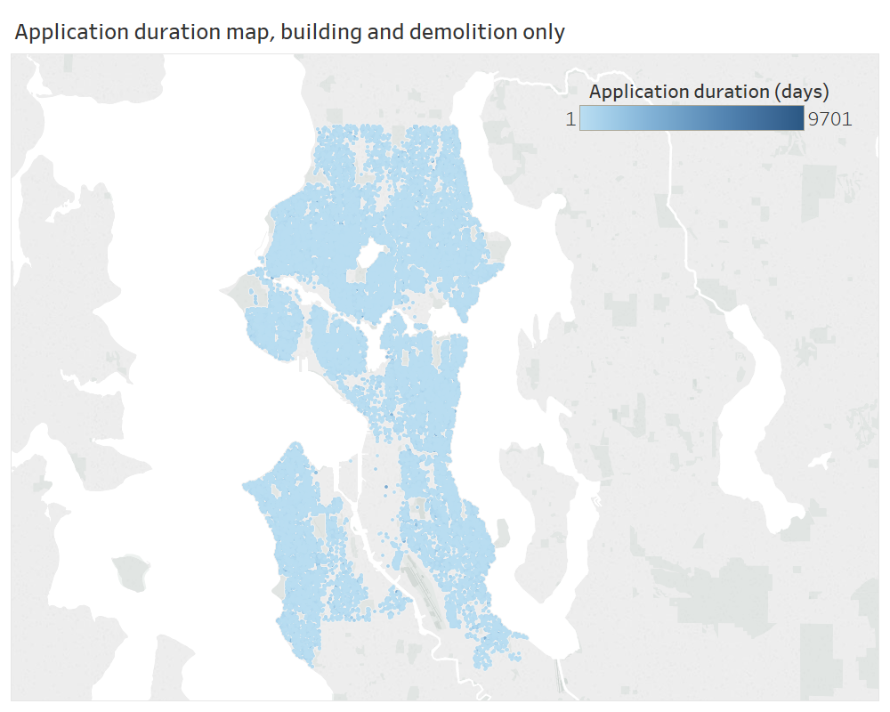
I next considered how long the construction process might take in Seattle, generating a metric for the period of time between the application date for the permit (defined as the date SDCI accepted the application as a complete submittal) and its completion date (defined as the date the permit had all its inspections completed). As can be seen from the map, this "application duration" measure is dominated by a few very long construction projects, making the colors of this figure not very informative. When specifying the application duration measure, I chose to restrict the data to building and demolition permits since these would be the type of construction projects I'd consider for building my own home.
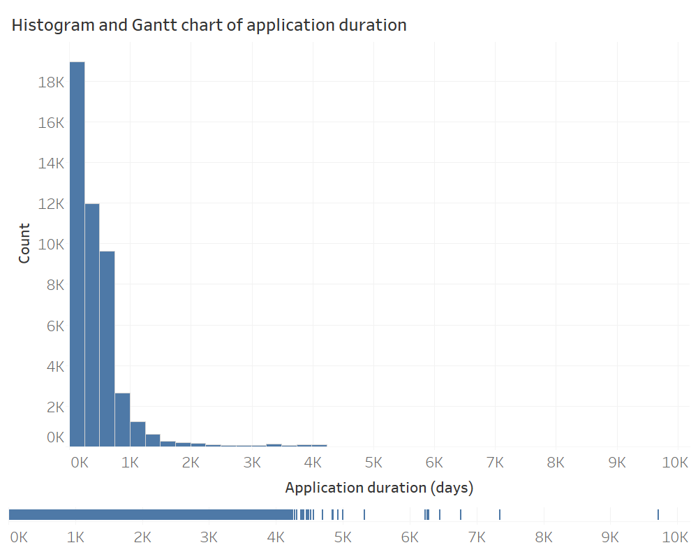
Turning away from the map view, I generated a histogram of the application duration data. This figure suggests that most residential building and demolition permits take around a year to go from application to completion, but a few much longer-running construction projects are obscured by the histogram view. The Gantt chart at the bottom helps to identify these projects.
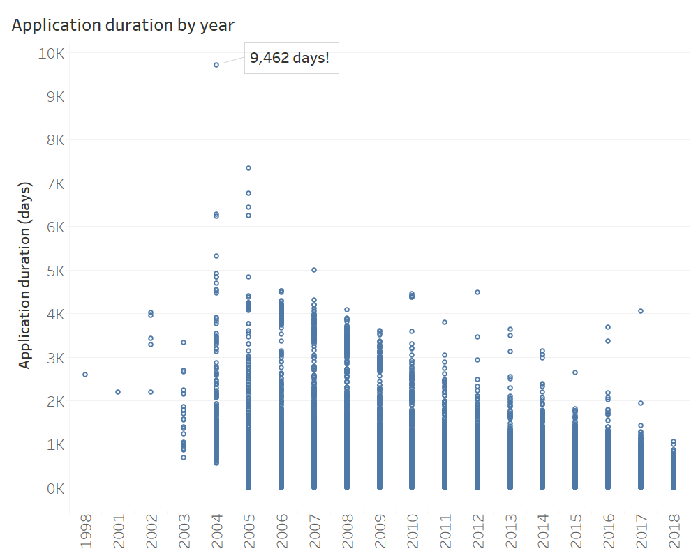
To look more closely at these long-running projects, I stratified the data by year. The spotty record keeping of the late 1990s and early 2000s is apparent from the smaller amounts of data, and 2019 was excluded given that the data for the year is incomplete. I was curious whether the increasing availability of digital construction plans might streamline the permit process over time, and it does seem that application durations decrease as time goes on, with the exception of a few outliers. Note the impressive outlier from 2004 on the chart.
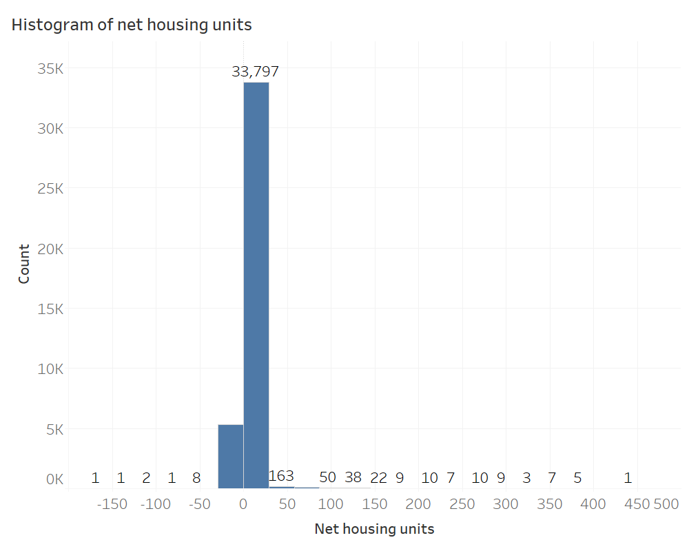
The dataset also provides information on the number of housing units added or removed under a particular permit. Having watched the residential density of Ballard grow since moving to the neighborhood in 2014, I was curious whether this phenomenon applies more generally throughout Seattle. With the exception of a few very high density housing projects to the right tail of the histogram, and a few significant housing unit losses to the left tail, the majority of permits do seem to increase the overall residential density of the city, as measured by a net increase in housing units (defined as the number of housing units added minus the number of housing units removed).
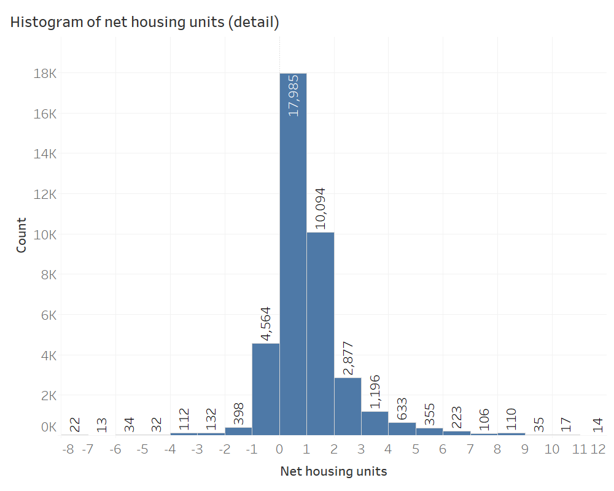
To look at this phenomenon in finer detail, I limited the view to the data-dense part of the histogram. Most residential construction projects had no net change in housing units, representing demolition and addition/alteration permit types. The next largest category reflects mostly new construction, with one unit added and zero units removed.
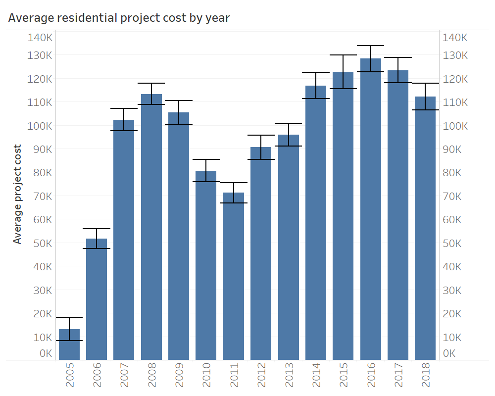
Finally, I was curious about what I might expect the construction process to cost. I looked at the average of the estimated project cost, which comprises parts and labor and is based on fair market value, and compared its value over time (error bars represent 95% confidence interval). Perhaps not surprisingly, we can see the effects of the global financial crisis reflected in these data. I was initially surprised by the optimistic suggestion that residential construction costs ~100K, on average, in Seattle, before realizing that this comparatively low cost was being driven by the large number of additions/alterations in the dataset and not new construction.
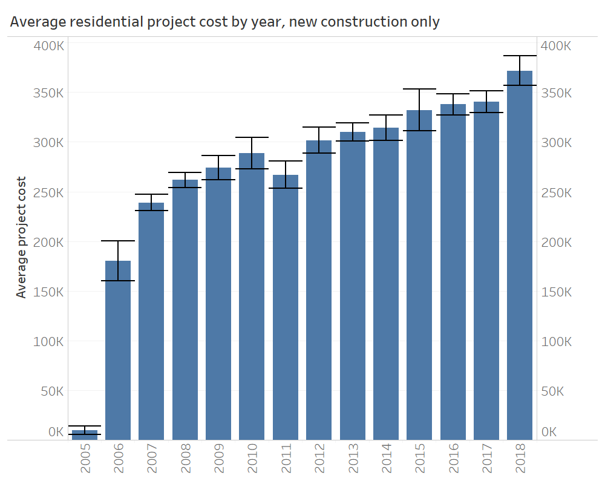
Filtering the dataset on new construction only reveals a more pessimistic, but believable, view of construction costs, which unhappily for me (and unsurprisingly) appear to be increasing over time.
Summary
Seattle seems to be a city where residential construction costs and residential density are both increasing, reflecting what we already knew -- we live in a beautiful (and expensive) area, and we're not the only ones who want to live here. As for building my own home...at least I can expect the permit process to go relatively quickly!